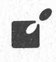

Auerbach'ın Leipzig'teki meyhanesi
Valpurgis Gecesi Rüyası ya da Oberon ve Titania'nın altın evlilik yıldönümü
ÖTEKİ KLASİK
Kapak Tasarım : Öteki Ajans Kapak Resmî: Efkan
Beyaz Dizgi : Şubat Ajans,417 97 60
Baskı: Yeni Doğuş Matbaası - 417 87 52
1. Basım , Mart 1992
2. Basım , Kasım 1993
3. Basım , Ocak 1995
Öteki, Açı Yayıncılığın kuruluşudur.
Yönetim Yeri:
Mediha Eldem Sok: 52/1 06420 Kızılay/ANKARA Tel (Fax) 433 96 09
ISBN 975 - 7782 - 13-0
Johann Wolfgang Goethe
Türkçesi
Nihat Ülner

Johann Wolfgang Goethe
Johann Wolfgang Goethe 23 Ağustos 1749 tarihinde Frankfurt'ta doğdu. Varlıklı bir ailenin çocuğu olarak oldukça iyi bir eğitim gördü. Böylece çocuğun kapsamlı kişilik yapısı (baba tarafının akılcılığı ve anne tarafının yoğun duygusallığı) herşeye rağmen birarada varolabildi. Gençliğinde hukuk eğitimini doktoraya kadar sürdürmüştür ve gerçek anlamda edebiyata yönelmeden önce doğabilimi ve resim sanatı alanlarında yeteneklerini ortaya koymuştur.
1776'dan itibaren Weimar Dükalığı’nda müşavirlik yaptı. Bu sırada Weimar Tiyatrosu da ona bağlıydı. Weimar’daki devlet görevini yaşamının sonuna kadar devam ettirdi.
Goethe'nin klasik dönemi ünlü İtalya seyahatinin (1786-1788) sonrasına rastlar. Gittiği İtalya'da daha önce yalnızca kitaplarda okuduğu Antik Çağ ile gerçek anlamda karşı karşıya kaldı.
Alman düşünce ve edebiyatını derinden etkilediği gibi, ulusal sınırları aşıp dünya edebiyatının olmazsa olmaz yazarlardan biri olarak kabul edildi.
Yaşama 22 Mart 1832 yılında gözlerini yumdu. Son sözleri ünlüdür: "Işık, daha çok ışık!”
Çevirmenin Notu
Elinizdeki çeviri Faust konusunda sanırım 5. veya 6. çeviri denemesi. Karşılaştırdığım çeviriler Sadi Irmak (1960), Vasfi Mahir Kocatürk (1963, 1968) ve Haşan İzzettin Dinamo'ya ait (1983; bu aynı zamanda en son çeviri).
Çevirinin 'artistik' yönüne fazla bir ağırlık vermedim: Işığın rahatça geçebilmesi için saydamlığı seçtim. Özgün sanatsal bir çabanın ancak tiyatronun kendi özgün ortamında gerçekleşebileceğine inanıyorum.
Faust'a gelince, Goethe bunu oldukça genç yaşta yazmıştır ve konu peşini bırakmayınca, daha olgun bir döneminde onu yeniden ele almıştır. Halk söylencesinde olduğu gibi, Goethe, Faust'u cehenneme gönderecekti (klasik tragedya usülüne göre onu 'öldürecekti') ama sonra bu düşüncesini değiştirdi. Herhalde hem Faust'un hem Mefistofeles'in inşaası sırasında kendine ait fazlasıyla malzeme kullanmıştır. Kimse kendini bile bile ne cehenneme gönderir ne de bir cehennem kaçkını olduğunu itiraf eder; en azından akıllı biri.
Doğal olarak teşekkür etmem gereken arkadaşlarım var: Eşim Berna Ülner sürekli redaksiyon yaptı, Macit Koper bazı bölümlen okudu ve önerileriyle katkıda bulundu ve bütün çalışma boyunca Prof. Wilfried Buch sonu gelmez sorularımı yanıtladı. Ayrıca Yayınevinin titiz çalışma tarzı ve Halil Hacıalioğlu'nun redaksiyonu çalışmamı çok olumlu yönde etkiledi.
Ankara, 13 Mart 1992